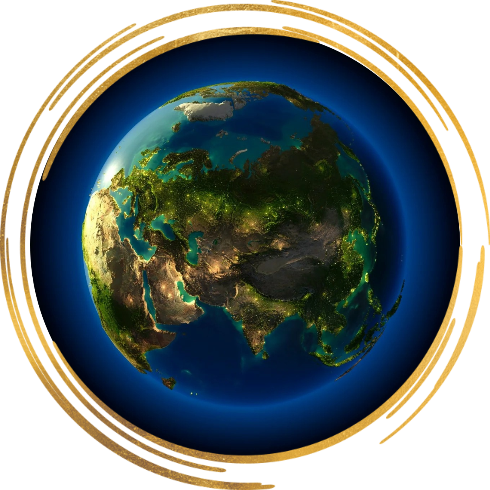
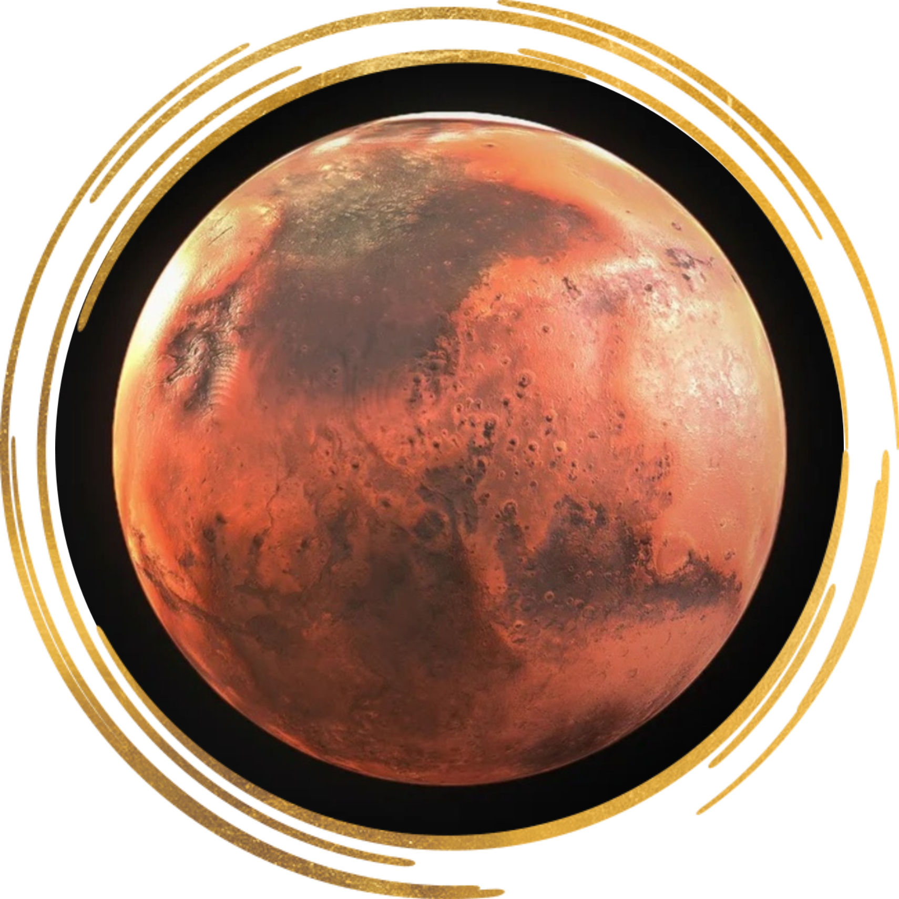
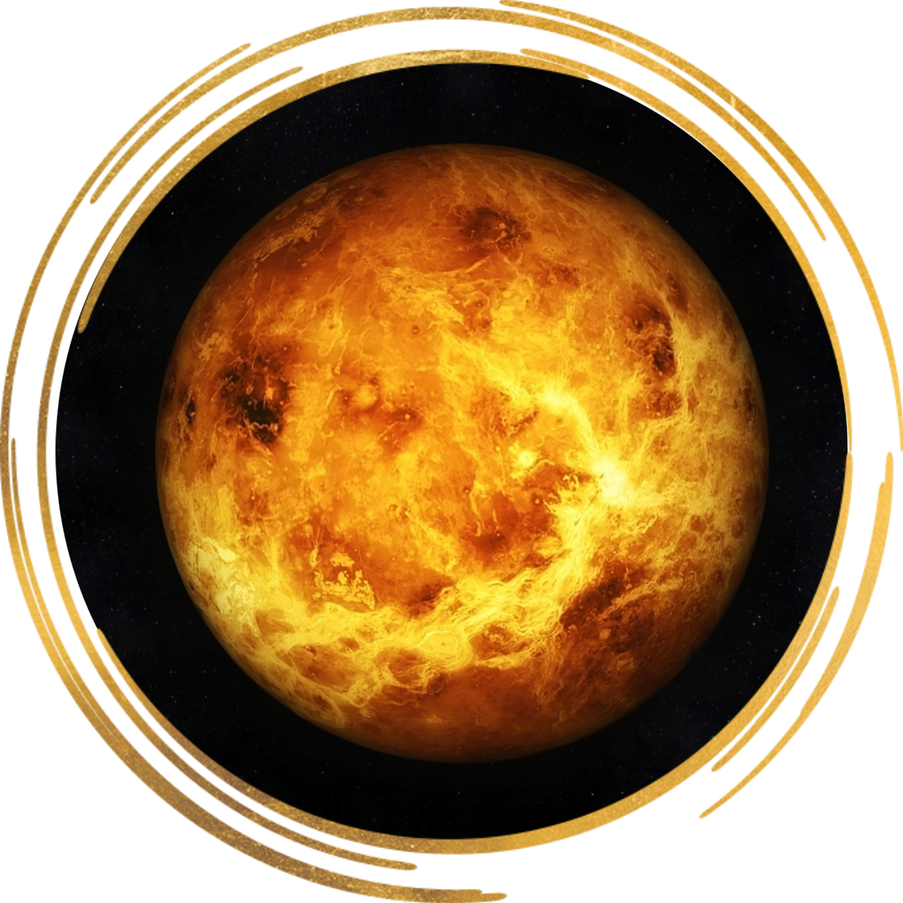
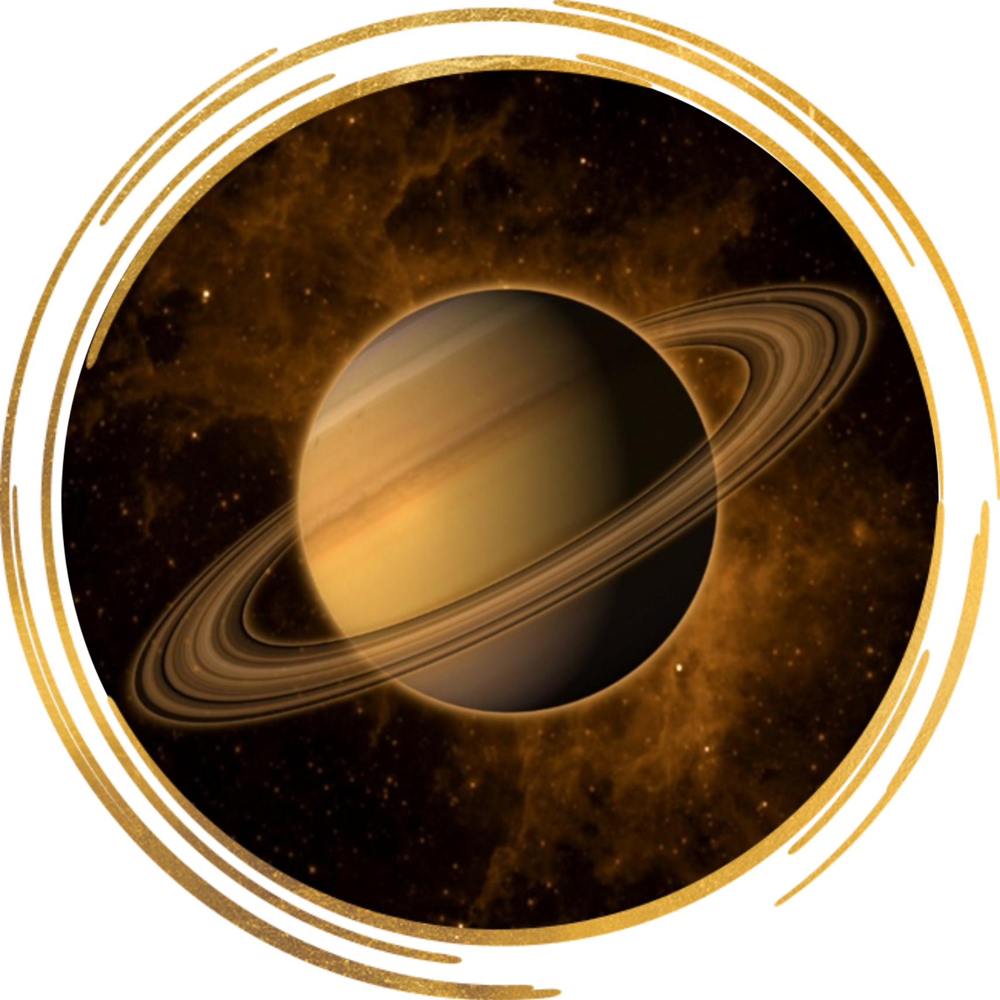
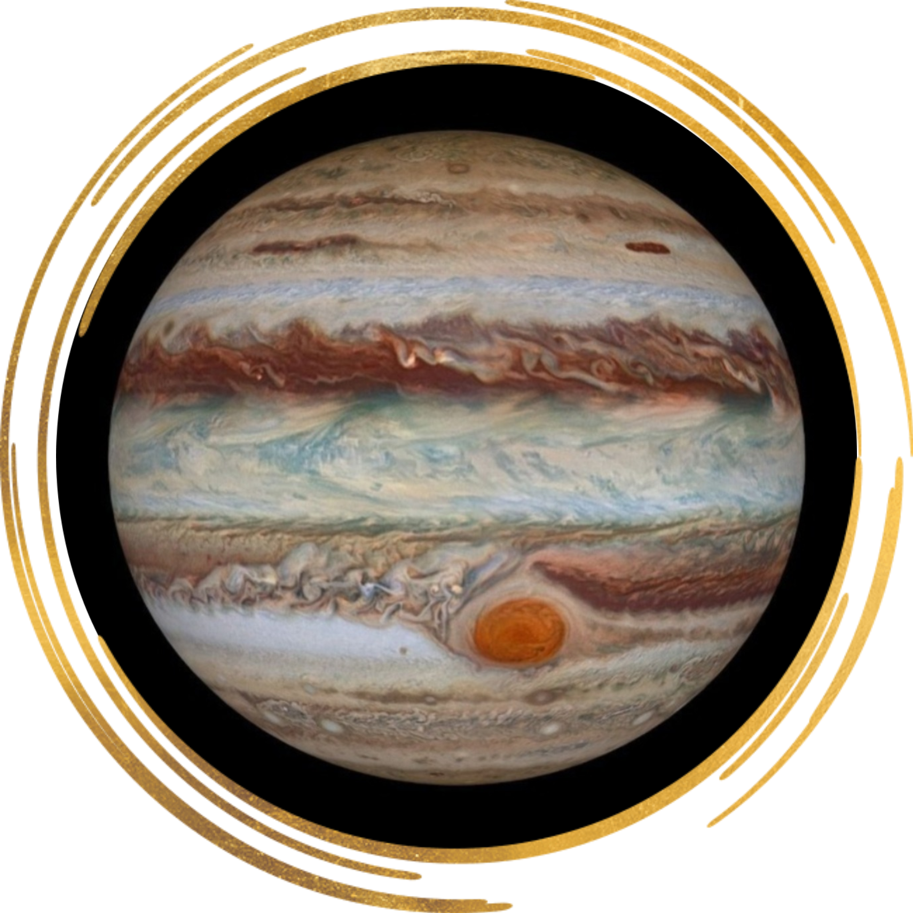
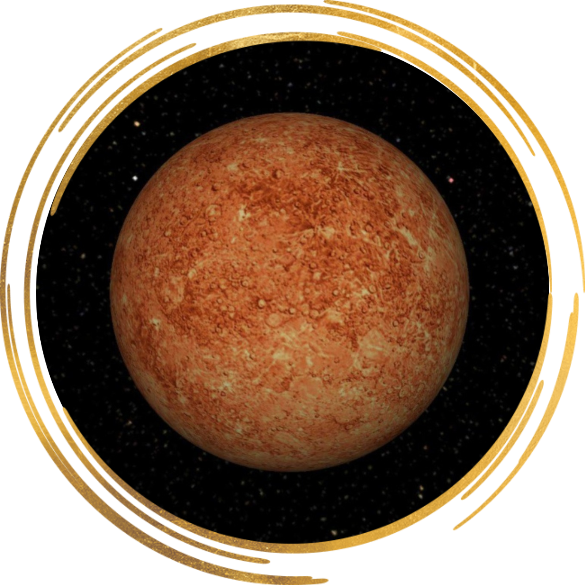
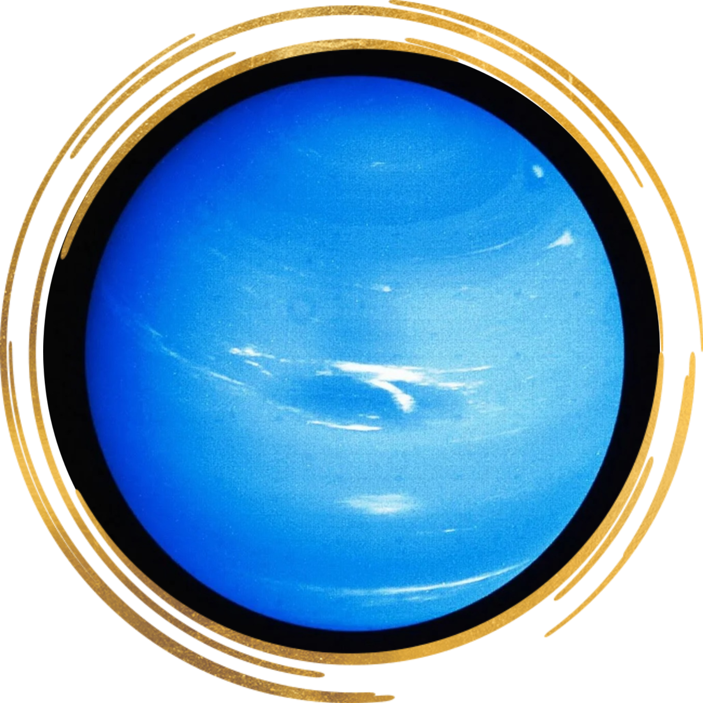
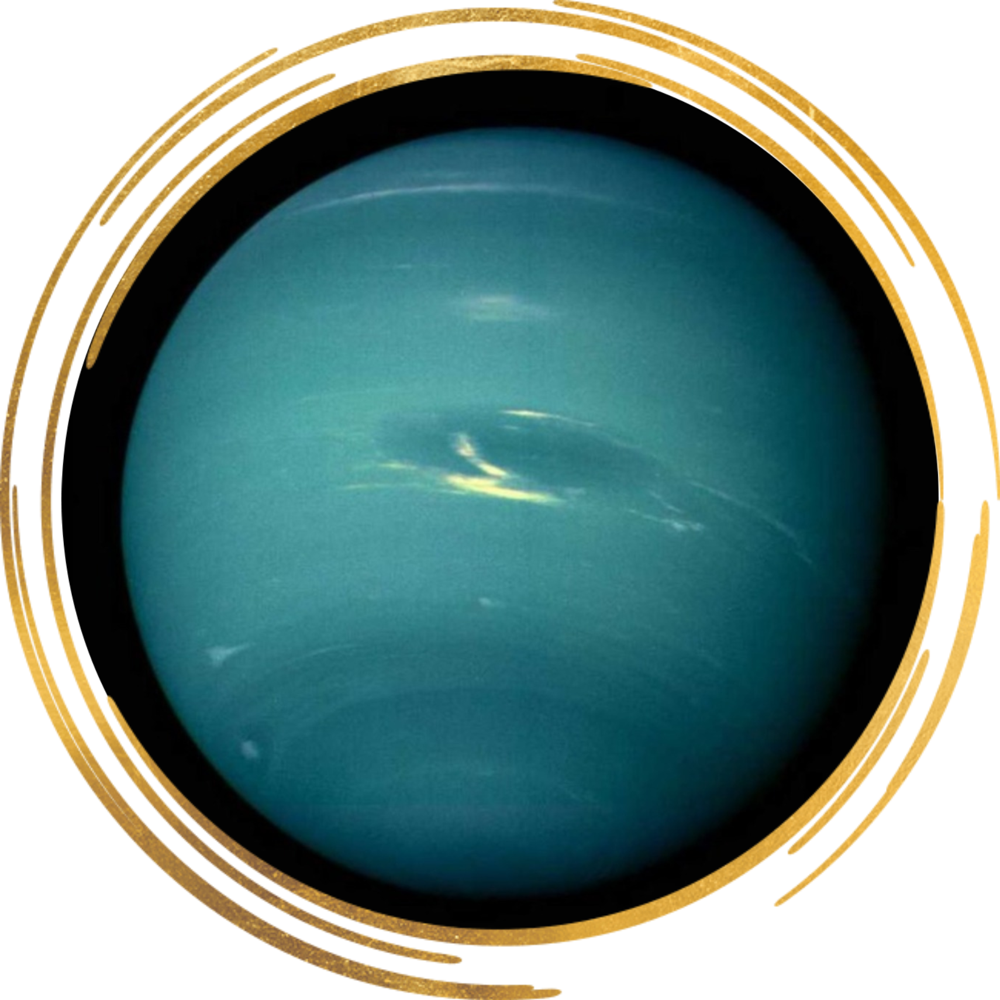

Земля
Земля — одна из планет, которые вращаются вокруг Солнца. Она почти в 110 раз меньше этого светила по диаметру.
Марс
Марс — называют красной планетой из-за ржаво-красного цвета его поверхности. Температура на Марсе очень низкая и в дневное время суток, и в ночное.
Венера
Венера — планета, которую часто называют утренней или вечерней звездой. Поверхность Венеры представляет собой равнину, усыпанную камнями и обломками скал. На Венере нет ни воды, ни жизни.
Сатурн
Сатурн — планета, которая по размерам чуть меньше Юпитера. Внешне Сатурн отличается от остальных планет тем, что окружен множеством светящихся колец.
Юпитер
Юпитер — самая большая планета Солнечной системы. Она больше Земли в 1000 раз. Юпитер находится на огромном расстоянии от Солнца, отчего температура на этом газовом гиганте около -140°С.
Меркурий
Меркурий — ближайшая к Солнцу планета. Ни воды, ни воздуха на Меркурии нет. Из-за того что Меркурий так близок к светилу, дневная температура на этой планете почти +450°С.
Нептун
Нептун — по виду и размерам похож на Уран. Он сильно сжат и быстро вращается. Нептун удален от Солнца на 2,8 миллиардов километров.
Уран
Уран — удален от Солнца на расстояние в 19 раз большее, чем Земля, поэтому получает очень мало тепла.